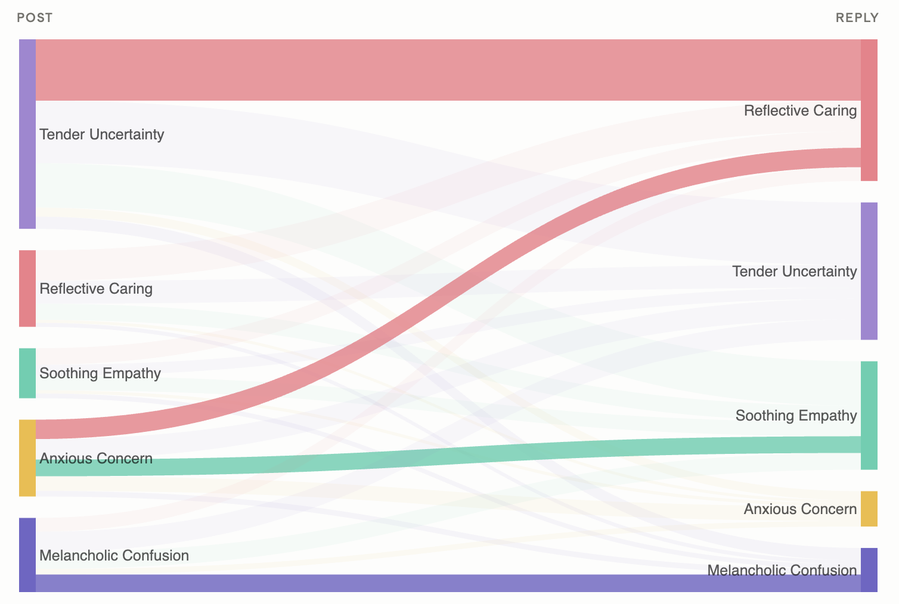
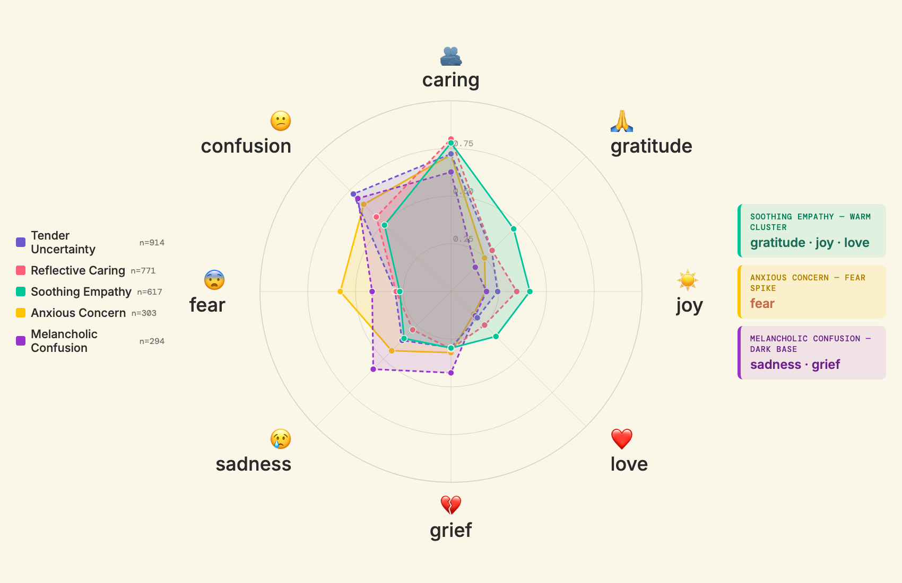

Five clusters split the conversation by emotional fingerprint. Beneath all of them, curiosity is steady. And in the replies, the room reorganizes — reassurance leads.
1 in 4 replies to grief mirror grief. Only 7 of 100 replies to anxiety mirror anxiety — the rest offer warmth.
Soothing Empathy leads — by replying.

The sharpest contrast sits between Anxious Concern — defined by a fear spike — and Soothing Empathy, whose signature bends toward gratitude, love, and joy.
